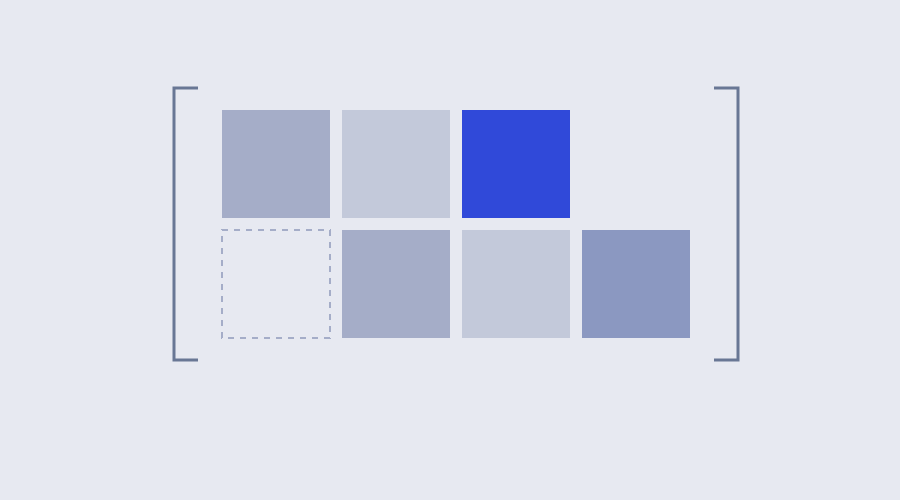

What belongs in the context?
A working question about giving an assistant the information a task actually needs.

Sample text for the reading-page design. This is not a published article by Anh.
When an assistant misses something, adding more background is an obvious response. Another document, another example, another explanation of the project. It is less obvious which part of that material will help with the next decision.
One way to explore the question is to begin with the task itself. What must the assistant know to act? Which details explain the goal, and which details only describe how the project arrived here?
Try a smaller packet
For a page design, a useful starting packet could contain the current page, the requested interaction, and the existing visual conventions. Keep a record of the information the assistant asks for or gets wrong.
Then revise the packet using those observations. Add the missing constraint. Remove a stale instruction. Make an important example easier to find. Each revision should have a reason tied to the task.
What information would change the next decision?
Keep the question open
One successful attempt does not settle the right amount of context for every task. It gives you a result for one task, with one packet of information. A different task may need a different starting point.
The useful artifact is the pair of input and outcome. Keeping both makes it possible to compare later attempts without relying on memory alone.